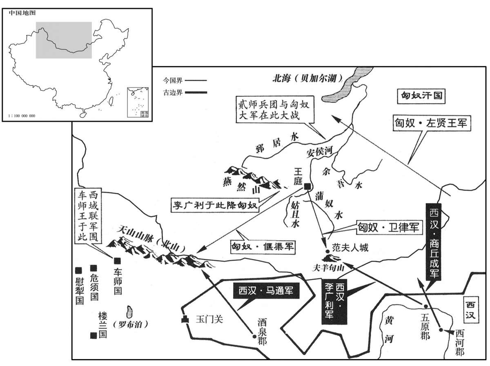

公元前90年资治通鉴：本年记事、原文与白话对照
按原书编年位置阅读；追叙和史论不等于本年发生的事件。白话采用所据译本，缺译不以生成译文补齐。
卷22 · 本年记事
公元前90年 · 汉世宗孝武皇帝征和三年
征和三年〔（辛卯、前九○）〕
本年事件索引（现代整理）

本年形势与背景参考图
春，正月，上行幸雍，至安定、北地。〔雍，于用翻。〕
春季，正月，汉武帝巡游至雍，又到达安定、北地二郡。
匈奴入五原、酒泉，杀两都尉。三月，遣李广利将七万人出五原，商丘成将二万人出西河，马通将四万骑出酒泉，击匈奴。
匈奴侵入五原、酒泉、杀死二郡都尉。三月，汉武帝派李广利率兵七万从五原出塞，商丘成率兵二万从西河出塞，马通率骑兵四万从酒泉出塞，袭击匈奴。
夏，五月，赦天下。
夏季，五月，汉武帝下诏大赦天下。
匈奴单闻汉兵大出，悉徙其辎重北邸郅居水；〔重，直用翻。师古曰：邸，至也，音丁礼翻。郅，之日翻。〕左贤王驱其人民度余吾水六七百里，居兜衔山；单于自将精兵渡姑且水。〔将，即亮翻。师古曰：且，子余翻。〕商丘成军至，追邪径，无所见，还。〔师古曰：从疾道而追之，不见虏而还也。邪，音士嗟翻。〕匈奴使大将与李陵将三万余骑追汉军，转战九日，至蒲奴水；〔蒲奴水又在龙勒水南。〕虏不利，还去。马通军至天山，匈奴使大将偃渠将二万余骑要汉兵，〔要，一遥翻；下同。〕见汉兵强，引去；通无所得失。是时，汉恐车师〔【章：十四行本“师”下有“兵”字；乙十一行本同；孔本同。】〕遮马通军，遣开陵侯成娩将楼兰、尉犁、危须等六国兵〔危须国治危须城，去长安七千二百九十里，西至焉耆百里。娩，音晚，又音免。〕共围车师，尽得其王民众而还。贰师将军出塞，匈奴使右大都尉与卫律将五千骑要击汉军于夫羊句山狭，〔要，读曰邀。服虔曰：夫羊，地名也。师古曰：句山，西山也。句，音钩。〕贰师击破之，乘胜追北至范夫人城；〔应劭曰：本汉将，筑此城；将亡，其妻率余众完保之，因以为名也。张晏曰：范氏，能胡诅者。〕匈奴奔走，莫敢距敌。
匈奴单于得到汉朝大举出兵的消息，便将全部辎重向北转移到郅居水；左贤王驱赶他管辖的匈奴民众渡过余吾水，迁移六七百里，到兜衔山居住；单于亲自率领精兵渡过姑且水。商丘成率兵来到，走捷径追击匈奴，但未见匈奴人踪迹，撤兵而还。匈奴方面派遣大将与李陵一起率领骑兵三万余人追击汉军，双方转战九日，来到蒲奴水，匈奴军作战失利，退兵而去。马通部队来到天山，匈奴方面派大将偃渠率领骑兵二万余人拦截汉军，见汉军兵力强盛，只得退走。马通率领的汉军既没受什么损失，也没有什么收获。这时，汉朝怕车师国出兵阻截马通军，派开陵侯成娩率领楼兰、尉犁、危须等六国军队共同包围车师，将车师王及其民众全部俘获后返回。贰师将军李广利率兵出塞，匈奴方面派右大都尉与卫律率领骑兵五千在夫羊地区的句山的狭道上拦击汉军，李广利打败匈奴军，乘胜追击败兵到范夫人城。匈奴军奔逃，不敢再抗拒汉军。
初，贰师之出也，丞相刘屈牦为祖道，〔祖，軷祭也。崔氏云：宫内之軷，祭古之行神；城外之軷，祭山川与道路之神。记曾子问：诸侯适天子，道而出。注云：祖道也。聘礼曰：出祖释軷，祭酒脯也。注云：祖，始也。行出国门，正陈车骑，释酒脯之奠为行始也。师古曰：祖者，送行之祭，因设宴饮。昔黄帝之子累祖好远游而死于道，故祀以为行神。为，于伪翻。〕送至渭桥。广利曰：“愿君侯早请昌邑王为太子；如立为帝，君侯长何忧乎！”〔当时列侯通呼为君侯，尊称之也。〕屈牦许诺。昌邑王者，贰师将军女弟李夫人子也；贰师女为屈牦子妻，故共欲立焉。会内者令郭穰〔班表，内者令属少府。又据昭纪，内谒者令郭穰。内者、谒者各有令、丞，皆属少府。岂其时穰兼两令乎！〕告“丞相夫人祝诅上及与贰师共祷祠，欲令昌邑王为帝”，按验，罪至大逆不道。六月，诏载屈牦厨车以徇，〔师古曰：厨车，载食之车。徇，行示也。〕要斩东市，〔要，与腰同。〕妻子枭首华阳街；〔枭，坚尧翻。长安城中八街，华阳其一也。华，户化翻。〕贰师妻子亦收。贰师闻之，忧惧，其掾胡亚夫亦避罪从军，说贰师曰：“夫人、室家皆在吏，若还，不称意适与狱会，〔掾，于绢翻。说，式芮翻。称，尺证翻。〕郅居以北，可复得见乎！”〔如淳曰：以就诛后虽欲复降匈奴不可得。复，扶又翻。〕贰师由是狐疑，深入要功，〔要，一遥翻。〕遂北至郅居水上。虏已去，贰师遣护军将二万骑度郅居之水，逢左贤王、左大将将二万骑，与汉兵合战一日，汉军杀左大将，虏死伤甚众。军长史与决眭都尉辉渠侯谋曰：〔晋灼曰：决眭都尉，匈奴官也。功臣表，归义侯仆朋子雷电以击匈奴功，封辉渠侯。辉渠，鲁阳县也。余据班表，仆朋侯辉渠食邑于鲁阳，雷电嗣爵。雷电不自匈奴来降，则决眭都尉非匈奴官也。师古曰：眭，息随翻。辉，音辉。〕“将军怀异心，欲危众求功，恐必败。”谋共执贰师。贰师闻之，斩长史，引兵还至燕然山。〔据匈奴传，燕然山在匈奴中速邪乌地。师古曰：燕，一千翻。〕单于知汉军劳倦，自将五万骑遮击贰师，相杀伤甚众；夜，堑汉军前，深数尺，〔堑，七艳翻。深，式禁翻，度深曰深。〕从后急击之，军大乱；〔【章：十四行本“乱”下有“败”字；乙十一行本同；孔本同；张校同。】〕贰师遂降。单于素知其汉大将，以女妻之，〔降，户江翻。妻，千细翻。〕尊宠在卫律上。宗族遂灭。
当初，李广利出塞时，丞相刘屈牦为他祭祀路神送行到渭桥。李广利说：“希望您早日奏请皇上立昌邑王为太子。如果昌邑王能即皇帝位，您以后还有什么可忧虑的呢？”刘屈牦应诺。昌邑王刘为李广利的妹妹李夫人所生，李广利女儿又是刘屈牦的儿媳妇，所以二人都希望立昌邑王为太子。就在这时，内者令郭穰向朝廷告发说：“丞相夫人诅咒皇上，又与贰师将军一起祈祷神灵，要让昌邑王为帝。”汉武帝命人调查属实，定为大逆不道之罪。六月，汉武帝下令逮捕丞相刘屈牦，将他放在装载食物的车上游街示众，然后押往长安东市腰斩，刘屈牦的夫人和儿子在华阳街斩首后悬首挂头颅示众；李广利的妻子儿女也被逮捕。李广利听到这一消息后，忧愁惊恐。一位因避罪而从军的幕僚胡亚夫劝说李广利道：“将军的夫人和家属都已被逮捕下狱，将军若是回去，稍不如皇上之意，就等于自投罗网。那时候，郅居水以北，可以再得见吗？归降匈奴就不可能了。”李广利于是狐疑不定，但仍然希望能够深入匈奴腹地立功，则皇上或许还能回心转意，于是率军继续北进至郅居水畔。匈奴军已然退去，李广利命令护军将领率骑兵二万渡过郅居水，与匈奴左贤王、左大将率领崐的二万骑兵遭遇，双方交战一日，汉军杀死左大将，匈奴兵死伤甚众。汉军长史与决眭都尉辉渠侯商议道：“贰师将军已怀有二心，却想将全军置于危险境地，以求自己建立功绩，恐怕一定要失败。”于是二人合谋共同将李广利擒住。李广利听到消息后，将长史处斩，率兵退至燕然山。单于知道汉军已疲劳不堪，便亲率骑兵五万拦击李广利，双方都伤亡惨重。入夜后，匈奴派人在汉军前进的路上挖了一条深达数尺的濠沟，然后在汉军背后发动猛烈攻击，汉军大乱，李广利于是投降。单于平时早就听说李广利是汉朝大将，便将女儿嫁给李广利为妻，对他的尊宠在卫律之上。汉武帝听说李广利投降匈奴，便将其满门抄斩。
秋，蝗。
秋季，发生蝗灾。
九月，故城父令公孙勇〔班志：城父县属沛郡。父，音甫。〕与客胡倩等谋反，〔师古曰：倩，音千见翻。〕倩诈称光禄大夫，言使督盗贼；淮阳太守田广明觉知，〔使，疏吏翻。守，式又翻。高祖十一年，置淮阳国；时为郡，属兖州；唐陈州地。贤曰：淮阳故城，在今陈州宛丘县东南。〕发兵捕斩焉。公孙勇衣绣衣、乘驷马车至圉；〔师古曰：陈留圉县。余据班志，圉县属淮阳。勇衣，于既翻。〕圉守尉魏不害等诛之。封不害等四人为侯。〔不害，当涂侯。江德，轑阳侯。苏昌，蒲侯。圉县小史，关内侯，食邑圉之遗乡。〕
九月，原城父县令公孙勇与其门客胡倩等谋反。胡倩假称自己是光禄大夫，奉命缉捕盗贼。淮阳太守田广明发觉有诈，派兵将胡倩逮捕处死。公孙勇身穿绣衣，乘坐四匹马拉的车来圉县，被圉县守尉魏不害等杀死。汉武帝封魏不害等四人为侯。
吏民以巫蛊相告言者，案验多不实。上颇知太子惶恐无他意，〔言为江充所迫，惶恐无以自明，而起兵杀江充，非有他意也。〕会高寝郎田千秋上急变，讼太子冤〔师古曰：高庙卫寝之郎。所告非常，故云急变。上，时掌翻。〕曰：“子弄父兵，罪当笞。天子之子过误杀人，当何罪哉！臣尝梦一白头翁教臣言。”上乃大感寤，召见千秋，谓曰：“父子之间，人所难言也，公独明其不然。此高庙神灵使公教我，公当遂为吾辅佐。”立拜千秋为大鸿胪，〔师古曰：当其立见而即拜之，言不移时也。胪，陵如翻。〕而族灭江充家，焚苏文于横桥上；〔即横门外渭桥也。横，音光。〕及泉鸠里加兵刃于太子者，初为北地太守，后族。上怜太子无辜，乃作思子宫，为归来望思之台于湖，〔师古曰：言己望而思之，庶太子之魂归来也。其台在今湖城县之西，閺乡县之东，基址犹存。〕天下闻而悲之。
官吏和百姓以巫蛊害人罪相互告发的，经过调查发现多为有不实。此时汉武帝也颇知太子刘据是因被江充逼迫，惶恐不安，才起兵诛杀江充，并无他意，正好守卫汉高祖刘邦祭庙的郎官田千秋又上紧急奏章，为太子鸣冤说：“作儿子的擅自动用父亲的军队，其罪应受鞭打。天子的儿子误杀了人，又有什么罪呢！我梦见一位白发老翁，教我上此奏章。”于是汉武帝霍然醒悟，召见田千秋，对他说：“我们父子之间的事，一般认为外人难以插言，只有你知道其间的不实之处。这时高祖皇帝的神灵派您来指教于我，您应当担任我的辅佐大臣。”立即就任命田千秋为大鸿胪，并下令将江充满门抄斩，将苏文烧死在横桥之上。曾在泉鸠里对太子兵刃相加的人，最初被任命为北地太守，后也遭满门抄斩。汉武帝怜惜太子无辜遭害，便特修一座思子宫，又在湖县建了一座归来望思之台，天下人听说这件事后，都很悲伤。